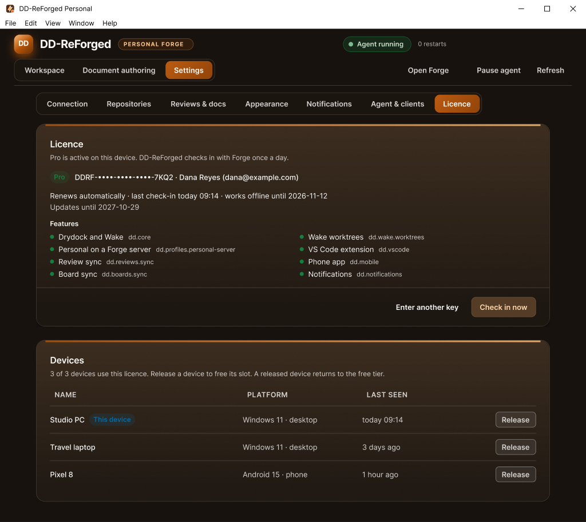
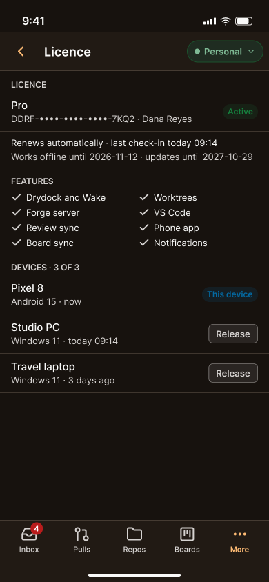
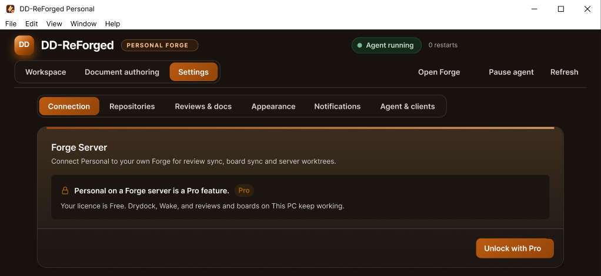

Seal: licences for the tools
Contents
A few days ago I tackled something I'd been putting off: licensing. I've put a lot of time into DD-ReForged and the tools around Prometheus, and I want to protect that before other people start using them. It went from plan to running on my own devices in a single day, and I wanted to think about how to tell you before writing it up.
The plan
- The engine will be free once I'm done building my game with it. The custom parts I build for the game, not so much. But there will be a way, with documentation, to build your own plugins and extend the engine to your heart's content.
- DD-ReForged has a free version that links up with the engine, at the low, low cost of registering for a free licence. Free never locks. It covers working on your own PC: Drydock, Wake, reviews and boards stored locally, and the VS Code extension. The phone app is free too, for reading.
- Pro adds everything that talks to a Forge server: syncing reviews and boards, server worktrees, notifications, and taking action from the phone (comment, approve, merge, move a card). Pro comes with a year of updates, and you keep the app.
- Enterprise isn't a thing... yet. More on that below.
Which feature sits in which tier is just data on the licence, so I can move things around later without shipping new code. Payments aren't part of this yet. For now I issue keys by hand.
Why licences at all
Let me be upfront, because "licence" sounds scarier than this is.
No, I won't sell your stuff. Registering is how I find out how many real users I've got, and whether enough support comes my way to keep delivering what I can, when I can. I have a family and a full-time job. I'm a web developer by day and a game developer at night and on weekends, and this is a passion project for me. I love to build stuff, and if I can make a few dollars from Pro, great.
I use all of it myself, every day. I'm the test bed, and the battle testing is done by friends and beta testers. If you want a custom solution for your team, we can talk enterprise, and see what custom features you'd want me to build to help the ecosystem grow and get more robust.
And to be honest, I'm sick of paying an arm and a leg for software. This stuff will basically be free. Pro comes with a year of updates, and you keep the app. Enterprise? Well, that's not a thing... yet. Maybe in my wildest dreams. This is just for funzies, and some cool tools to use for development.
Did I mention it will be almost free? Buy me enough cups of coffee and I won't need to buy my own anymore.
I appreciate you all for your support.
How it works
In keeping with the fire names, the licensing part of Forge is called Seal.


- A licence is a signed statement. Forge signs something like "this account has Pro, these features, up to 3 devices, updates until next October". Every app carries Forge's public key, so it can check the signature without going online. Nobody can turn Free into Pro without Forge's private key, and that never leaves the server.
- A key is how you claim it. You sign in, open Settings → Licence, and enter a key like
DDRF-XXXX-XXXX-XXXX-XXXXonce. - Each device gets its own pass. Every install makes its own device key and keeps it in the operating system's secure store. Activating sends Forge the public half, and Forge sends back a pass that only works on that device. Copying it to another machine gets you nothing.
- A daily check-in keeps it fresh. Once a day the app checks in and gets a pass that's good for another 14 days. If you're offline, everything keeps working until the 14 days run out. A licence that's been revoked stops at the next check-in.
- Up to 3 devices. You can release one yourself, from the desktop or the phone, to free its slot.


When a feature isn't in your licence, it doesn't vanish. It shows as locked, says which tier unlocks it, and everything else keeps working.


As usual, I drew all of these screens in Figma before building them: activating a key, the licence page, locked features, a failed check-in, the end of the offline grace, the device limit, and Forge's page for issuing and revoking keys.
Being honest about protection
Anything checked only inside an app can be cracked by someone determined enough. Desktop apps and Android apps can both be unpacked and patched. So I put the real protection where it can't be patched out: on the server. The paid features that matter run on Forge, and Forge checks the licence before it does anything. A patched app that skips its own check just gets turned away.
On top of that, the desktop app refuses to start if its files have been modified, and code signing is on my list so a tampered build can't pass as mine. What I deliberately didn't do is heavy obfuscation and anti-debugging. They slow honest debugging down more than they slow down anyone cracking it.
Working end to end
By that evening Seal was running on my Forge. I issued myself a licence and activated it on my PC and my phone. Then I switched on Forge's rule that refuses paid features without a licence, and tried it for real: I commented on a card from my phone, and the comment showed up in DD-ReForged on the PC.
The first real use found a bug, as usual. The Activate button on the PC was greyed out. The app asked for the licence details when I signed in, but at start-up the sign-in arrived before the licence part had finished starting, so the request was dropped. Now it loads the licence when it starts, waits properly for a sign-in that arrives early, and shows "Loading the licence…" until Forge answers.
Build 0.3.11 has Forge's public licence key built in, so it only trusts licences my Forge has signed.
Getting it to testers
What comes next is putting DD-ReForged in front of a few testers. They'll reach my Forge over Tailscale, a private network that also gives Forge a proper https address, and each tester gets a Pro key that expires when the beta ends. Later, Forge moves off my PC into a hosted setup on that same private network.
Plugins
I also settled the ground rules for the engine's plugin platform:
- For now, only my own trusted plugins.
- Plugins that only affect the editor can be switched on and off while it's running.
- Every plugin carries a licence, and the ones that ship with the engine get a free one.
Next
Hand out the first beta keys once the last checks pass, and keep building the plugin platform, which is the next big step for the engine.